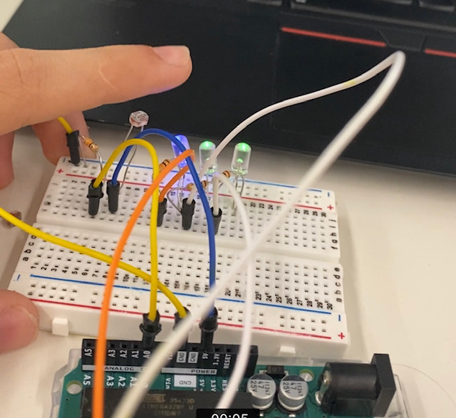
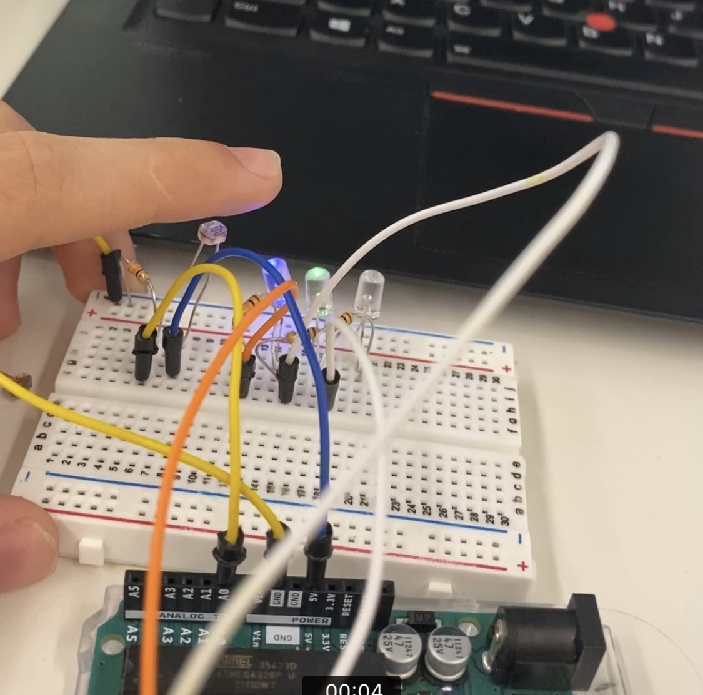
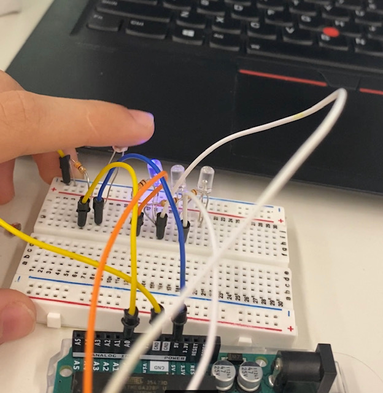

My first sensor was made from two pieces of copper foil, not too much interesting, I wanted to do something cooler and the light sensors looked cool.
The build wasnt that chalenging because of the instruction, I connected three leds and put a read function on the A0 pin.



I created a program that would turn lights on and off on what I felt was a linear scale, however, the x axis turned out not to be linear, increasing at uneven rates.
const int LIGHT_SENSOR_PIN = A0; // Arduino pin connected to light sensor's pin
const int LED_PIN1 = 3;
const int LED_PIN2 = 4;
const int LED_PIN3 = 5;// Arduino pin connected to LED's pin
const int ANALOG_THRESHOLD = 500;
// variables will change:
int analogValue;
void setup() {
pinMode(LED_PIN1, OUTPUT); // set arduino pin to output mode
}
void loop() {
analogValue = analogRead(LIGHT_SENSOR_PIN); // read the input on analog pin
if(analogValue > 400)
digitalWrite(LED_PIN1, HIGH); // turn on LED
else
digitalWrite(LED_PIN1, LOW); // turn off LED
if(analogValue > 500)
digitalWrite(LED_PIN2, HIGH); // turn on LED
else
digitalWrite(LED_PIN2, LOW); // turn off LED
if(analogValue > 700)
digitalWrite(LED_PIN3, HIGH); // turn on LED
else
digitalWrite(LED_PIN3, LOW); // turn off LED
}
Anyone who wants the code is welcome to it!